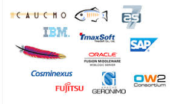
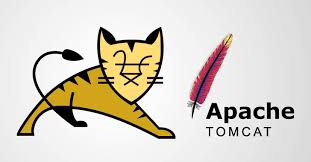
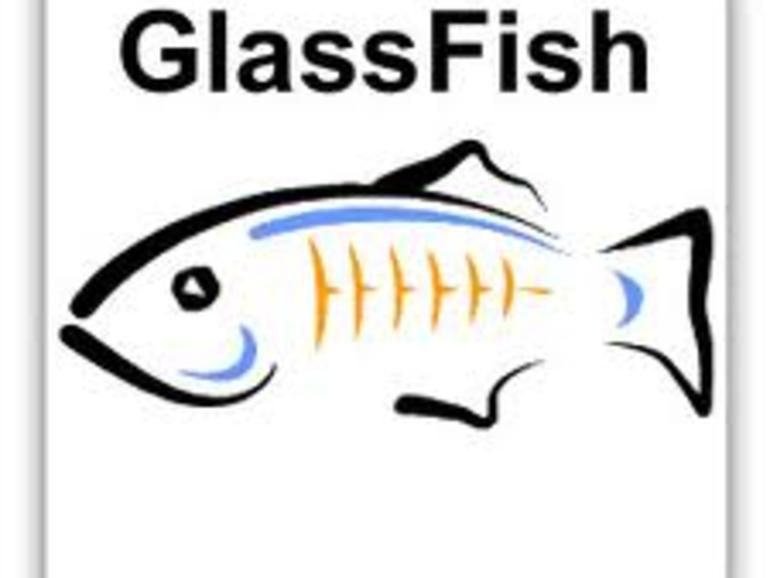
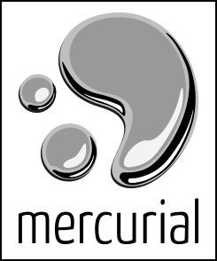

Servidores Web
Servidor Web. Es un programa que gestiona cualquier aplicación en el lado del servidor realizando
conexiones bidireccionales y/o unidireccionales y síncronas o asíncronas con el cliente generando
una respuesta en cualquier lenguaje o aplicación en el lado del cliente. El código recibido por el
cliente suele ser compilado y ejecutado por un Navegador Web. Para la transmisión de todos estos
datos se utiliza algún protocolo. Generalmente se utiliza el protocolo HTTP para estas comunicaciones,
perteneciente a la capa de aplicación del Modelo OSI. El término también se emplea para referirse al
ordenador que ejecuta el programa.
Bibliografia: https://www.ecured.cu/Servidor_Web

Servidores de Aplicaciones Java
1) GlassFish es un servidor de aplicaciones de software libre desarrollado por Sun Microsystems, compañía adquirida
por Oracle Corporation, que implementa las tecnologías definidas en la plataforma Java EE y permite ejecutar aplicaciones que siguen esta especificación
2) WildFly, anteriormente conocido como JBoss AS, o simplemente JBoss, es un servidor de aplicaciones Java EE de código
abierto implementado en Java puro, más concretamente la especificación Java EE.
3) Apache Tomcat funciona como un contenedor de servlets desarrollado bajo el proyecto Jakarta en la Apache Software Foundation.
Tomcat implementa las especificaciones de los servlets y de JavaServer Pages de Oracle Corporation.

Repositorios
Repositorio es un término que tiene su raíz etimológica en repositorĭum, un vocablo latino. Un repositorio es un espacio que se utiliza para almacenar distintas cosas. ...
En este sentido, actualmente se suele hacer referencia a las bases de datos digitales y a diversos sistemas informáticos como repositorios.

Mercurial
Mercurial es un sistema de control de versiones multiplataforma, para desarrolladores de software. Está implementado principalmente haciendo uso del lenguaje de programación Python,
pero incluye una implementación binaria de diff escrita en C. Mercurial fue escrito originalmente para funcionar sobre GNU/Linux.

GitHub
GitHub es una forja para alojar proyectos utilizando el sistema de control de versiones Git. Se utiliza principalmente para la creación de código fuente de programas de computadora.
El software que opera GitHub fue escrito en Ruby on Rails. Desde enero de 2010, GitHub opera bajo el nombre de GitHub, Inc